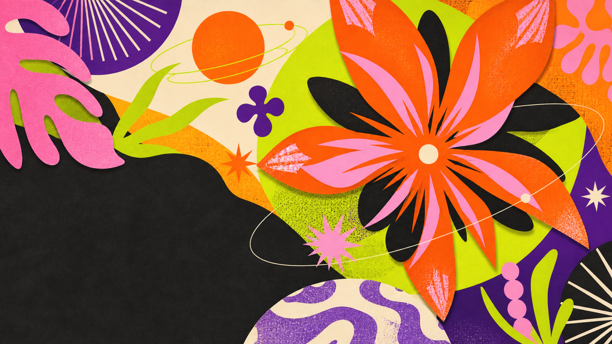
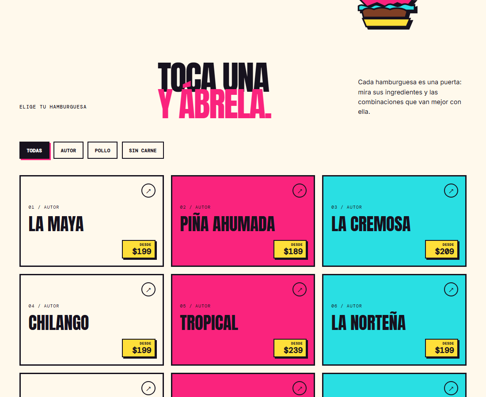
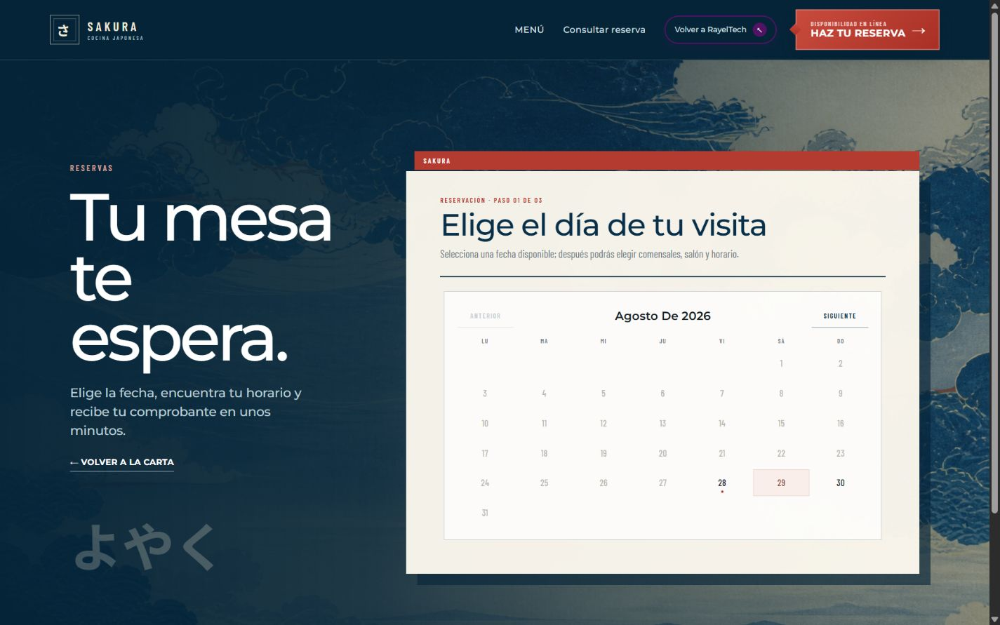

01 / Classic menu
Classic
Menu

02 / Menú informativo
Informative
Menu

03 / Interactive menu
Interactive
Menu

04 / Reservation system
01 / Classic menu

02 / Menú informativo

03 / Interactive menu

04 / Reservation system